Music Worksheets
201 printable Music worksheets (PDF) with answer keys: reading comprehension passages, reading trails and more – no prep, filter by grade.
201 resources
Grade
By grade: 5th Grade · 9th Grade

Bell Making Reading Comprehension Passages | Music Scavenger Hunt 5-6

Body Percussion Reading Comprehension Passages | Music Scavenger Hunt 1-2
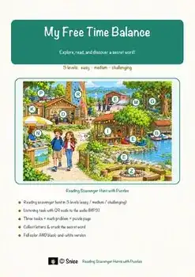
Free Time Reading Comprehension Passages | Life Skills Scavenger Hunt 5-6
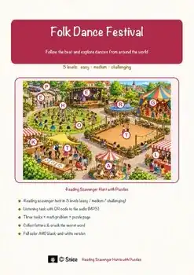
Folk Dance Reading Comprehension Passages | Music Scavenger Hunt 3-4
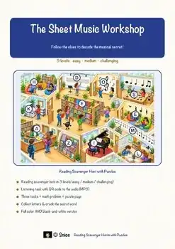
Sheet Music Reading Comprehension Passages | Music Scavenger Hunt 3-4
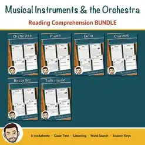
Musical Instruments Reading Comprehension BUNDLE | Orchestra & Piano
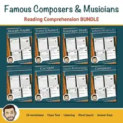
Famous Composers Reading Comprehension BUNDLE | Cloze, Listening & Word Search
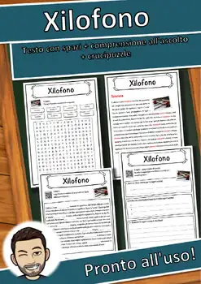
Xilofono – Italian Reading Comprehension Worksheet (Scheda): Cloze & Listening
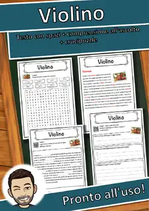
Violino – Italian Reading Comprehension Worksheet (Scheda): Cloze & Listening
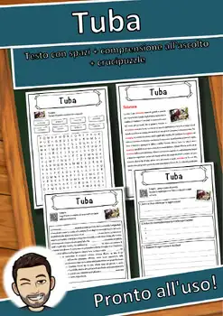
Tuba – Italian Reading Comprehension Worksheet (Scheda): Cloze & Listening
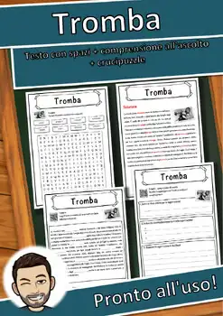
Tromba – Italian Reading Comprehension Worksheet (Scheda): Cloze & Listening
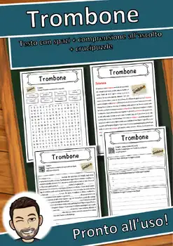
Trombone – Italian Reading Comprehension Worksheet (Scheda): Cloze & Listening
Timpano – Italian Reading Comprehension Worksheet (Scheda): Cloze & Listening
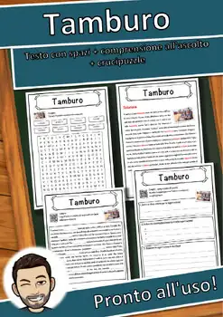
Tamburo – Italian Reading Comprehension Worksheet (Scheda): Cloze & Listening
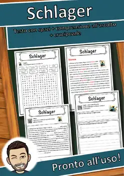
Schlager – Italian Reading Comprehension Worksheet (Scheda): Cloze & Listening
Sassofono – Italian Reading Comprehension Worksheet (Scheda): Cloze & Listening
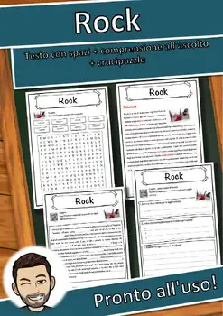
Rock – Italian Reading Comprehension Worksheet (Scheda): Cloze & Listening
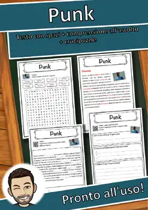
Punk – Italian Reading Comprehension Worksheet (Scheda): Cloze & Listening

Pianoforte – Italian Reading Comprehension Worksheet (Scheda): Cloze & Listening

Musical – Italian Reading Comprehension Worksheet (Scheda): Cloze & Listening
Musica pop – Italian Reading Comprehension Worksheet (Scheda): Cloze & Listening
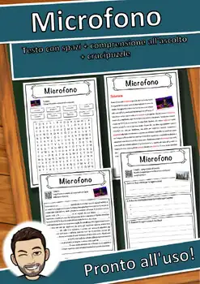
Microfono – Italian Reading Comprehension Worksheet (Scheda): Cloze & Listening

Aria – Italian Reading Comprehension Worksheet (Scheda): Cloze & Listening

Apollo – Italian Reading Comprehension Worksheet (Scheda): Cloze & Listening

Orchestra – Italian Reading Comprehension Worksheet (Scheda): Cloze & Listening
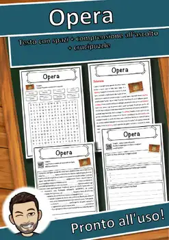
Opera – Italian Reading Comprehension Worksheet (Scheda): Cloze & Listening
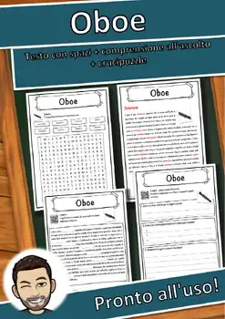
Oboe – Italian Reading Comprehension Worksheet (Scheda): Cloze & Listening
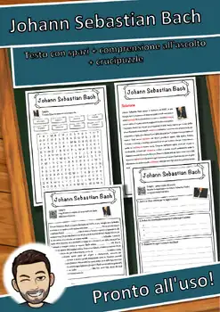
Johann Sebastian Bach – Italian Reading: Cloze, Listening & Word Search
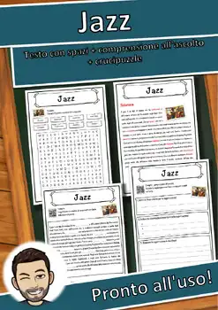
Jazz – Italian Reading: Cloze Text, Listening Task & Word Search (Scheda)
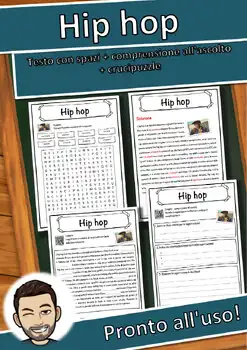
Hip hop – Italian Reading: Cloze Text, Listening Task & Word Search (Scheda)
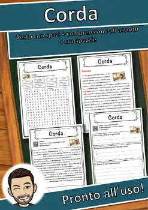
Corda – Italian Reading: Cloze Text, Listening Task & Word Search (Scheda)
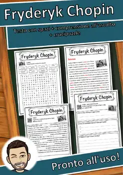
Fryderyk Chopin – Italian Reading: Cloze, Listening & Word Search
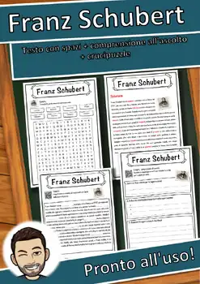
Franz Schubert – Italian Reading: Cloze, Listening & Word Search
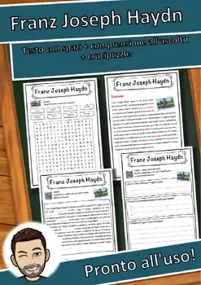
Franz Joseph Haydn – Italian Reading: Cloze, Listening & Word Search
Fagotto – Italian Reading: Cloze Text, Listening Task & Word Search (Scheda)
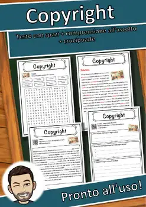
Copyright – Italian Reading: Cloze Text, Listening Task & Word Search (Scheda)
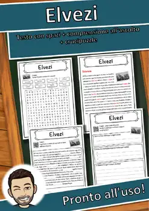
Elvezi – Italian Reading: Cloze Text, Listening Task & Word Search (Scheda)
Bos mutus – Italian Reading: Cloze Text, Listening Task & Word Search (Scheda)
Biblioteca – Italian Reading: Cloze Text, Listening Task & Word Search (Scheda)
Flauto traverso – Italian Reading: Cloze, Listening & Word Search
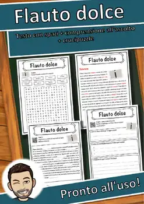
Flauto dolce – Italian Reading: Cloze, Listening & Word Search
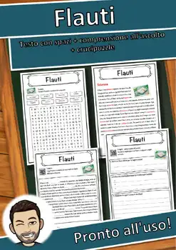
Flauti – Italian Reading: Cloze Text, Listening Task & Word Search (Scheda)
Fisarmonica – Italian Reading: Cloze Text, Listening Task & Word Search (Scheda)
Disco fonografico – Italian Reading: Cloze, Listening & Word Search
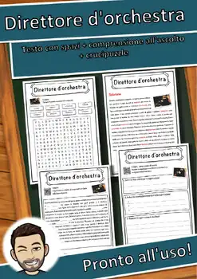
Direttore d'orchestra – Italian Reading: Cloze, Listening & Word Search
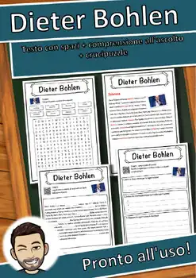
Dieter Bohlen – Italian Reading: Cloze, Listening & Word Search
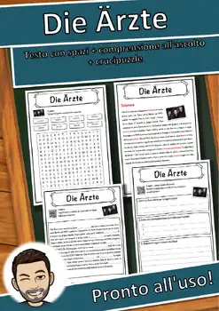
Die Ärzte – Italian Reading: Cloze Text, Listening Task & Word Search (Scheda)
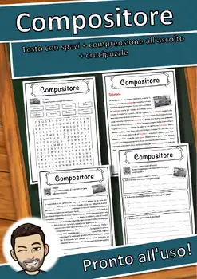
Compositore – Italian Reading: Cloze Text, Listening Task & Word Search (Scheda)
No resources found – try a different search term or filter.